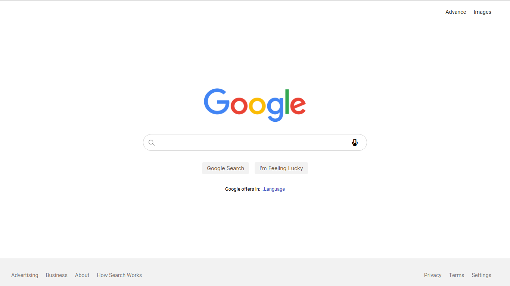
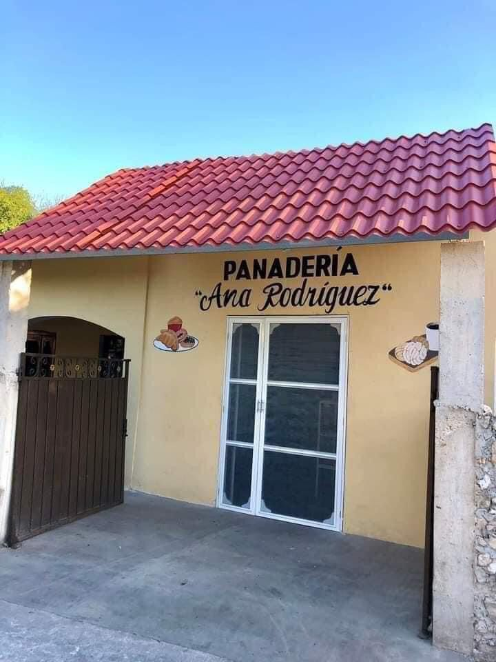
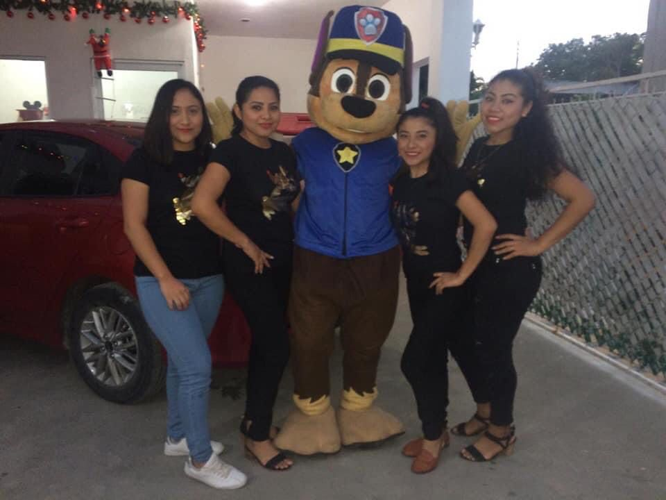
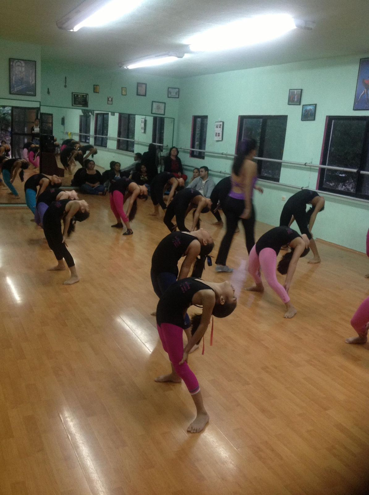

Desarrolladora Web
Desarrolladora de software, creativa, apasionada por crear, aprender, enamoarad de la vida. Si requieres soluciones, contáctame.
Mis proyectos realizados
Mi primera página web
Una pagina creada para mejorar mis hablidades de html y css. Trató de acerca de mi negocio familiar el que es una panadería y disfruté hacerla
Clon de Google
Es un proyecto realizado con la intención de mejorar y practicar las habilidades optenidas de los temas de HTML y CSS en las clases de TechnolochicasPRO..
Mi portafolio personal
Este proyecto fue creado durante el bootcamp de Technolochicas PRO, es una páagina web responsiva (adaptable a diversos dispositivos) con el propósito de poner en práctica el uso de frameworks y conocimiento del desarrollo web...

Experiencia Laboral
Servicio al cliente y auxiliar en marketing en una panadería
-

- Kinchil Yucatán
Auxiliar en una guarderia y maestra de infantes de 1-3años
-
- Kinchil Yucatán
Maestra en una escuela de ballet
-
- Hunucmá Yucatán
My abilities.
Trabajo en equipo
Trabajo de manera colaborativa y efectiva con otros miembros del equipo. Mi disposición para recibir retroalimentación y hacer ajustes demuestra un fuerte espíritu de equipo.
Excelente Profesionalismo
Siempre muestro un alto nivel de profesionalismo en mi trabajo. Desde la comunicación hasta la entrega del proyecto, mi compromiso con la calidad y la puntualidad es evidente..
Resolución de problemas
Mi habilidad para resolver problemas de manera eficiente y mi dedicación inquebrantable para superar desafíos técnicos son aspectos que considero esenciales en mi práctica profesional...

Comentarios
Resumen acerca de mí
La creatividad es una parte fundamental de mi enfoque, buscando siempre soluciones innovadoras a los desafíos que encuentro. Mi paciencia me permite abordar tareas complejas con perseverancia, garantizando resultados de calidad. En resumen, mi perfil destaca por una combinación única de creatividad, paciencia, rapidez de aprendizaje, proactividad, amor por el trabajo, capacidad para enseñar, gusto por programar.